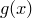

replot [ item <id> ] ...
The replot command has the same syntax as the plot command and is used to add more datasets to an existing plot, or to change its axis ranges. For example, having plotted one datafile using the command
plot 'datafile1.dat'
another can be plotted on the same axes using the command
replot 'datafile2.dat' using 1:3
or the ranges of the axes on the original plot can be changed using the command
replot [0:1][0:1]
The plot is also updated to reflect any changes to settings made using the set command. In multiplot mode, the replot command can likewise be used to modify the last plot added to the page. For example, the following would change the title of the latest plot to ‘foo’, and add a plot of the function  to it:
set title 'foo' replot cos(x)
Additionally, in multiplot mode it is possible to modify any plot on the current multiplot canvas by adding an item modifier to the replot statement to specify which plot should be replotted. The following example would produce two plots, and then add an additional function to the first plot:
set multiplot plot f(x) set origin 10,0 plot g(x) replot item 1 h(x)
If no item number is specified, then the replot command acts by default upon the most recent plot to have been added to the multiplot canvas.